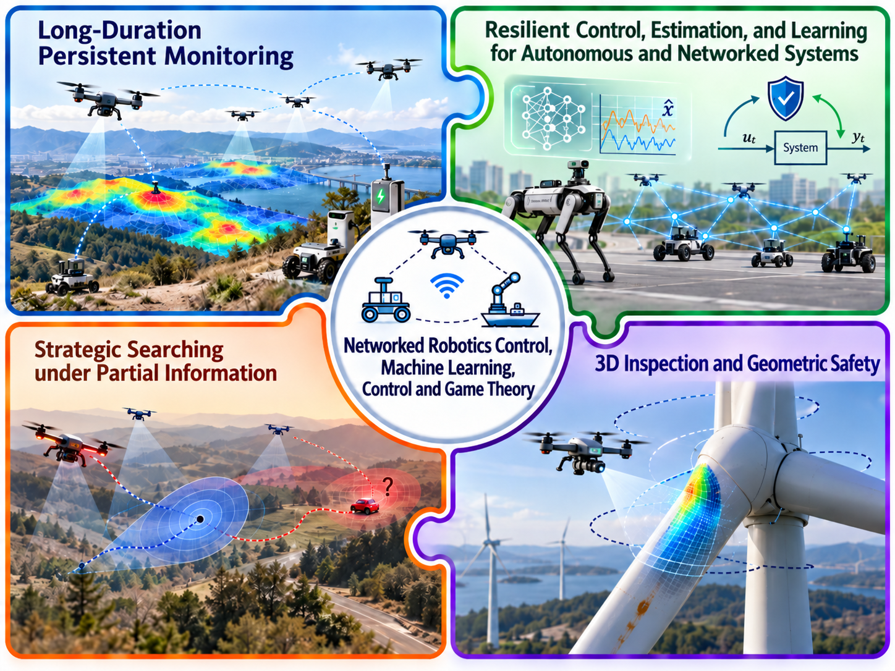

Networked robotics · Control · Learning
Research

Long-Duration Persistent Monitoring
Long-duration monitoring requires autonomous systems to maintain reliable spatial coverage over extended periods while operating under limited energy, sensing, communication, and computational resources. Unlike short-term coverage missions, persistent operation introduces additional challenges such as task redistribution, charging and re-entry, changing environmental priorities, congestion, and the need to preserve monitoring performance despite agents temporarily leaving the mission.
These problems become increasingly difficult as the number of agents grows and as sensing objectives, safety constraints, and shared resources become coupled. A central research question is therefore how a network of autonomous agents can sustain effective monitoring performance over long time horizons while adapting to operational constraints and changes in mission demand.
Here, we show several of our research directions on long-duration persistent monitoring, including coverage, task allocation, resilient coordination, and multi-agent path planning.
Core publications
- A Two-Layer Control Framework for Persistent Monitoring of a Large Area With a Robotic Sensor Network
- Efficient Multi-Robot Task Allocation with Nonsmooth Objective Functions for Persistent Monitoring in Large Dispersed Areas
- Human-Drone Swarm Interaction System for Persistent Monitoring of Large Disperse Area
- Persistent Monitoring of Large Dispersed Areas using Drone Swarms: Algorithms and Experimental Validation
Application-oriented earlier work
Preprint
- A review of Implementation and Challenges of Unmanned Aerial Vehicles for Spraying Applications and Crop Monitoring in Indonesia
Research videos
Voronoi-based Coverage Control for Multi-Robot Systems
We present a Voronoi-based coverage control algorithm for multi-robot systems to achieve optimal area coverage.
Human-Drone Swarm Interaction System for Persistent Monitoring
We present a human-drone swarm interaction system for persistent monitoring of large disperse areas using ergodic coverage control and safety-aware coordination.
BibTeX
@inproceedings{kosonen2025human,
title={Human-Drone Swarm Interaction System for Persistent Monitoring of Large Disperse Area},
author={Kosonen, Petri and Fadaeian, Yeganeh and Eura, Reeta-Mari and Sulameri, Jussi and Fikri, Muhamad Rausyan and Gusrialdi, Azwirman},
booktitle={2025 IEEE 21st International Conference on Automation Science and Engineering (CASE)},
pages={179--184},
year={2025},
organization={IEEE}
}
Resilient Control, Estimation, and Learning for Autonomous and Networked Systems
Modern autonomous systems increasingly operate as interconnected dynamical networks whose performance depends not only on individual controllers, but also on communication, distributed information, estimation, and interactions among agents. Such systems must remain stable and safe despite disturbances, modeling uncertainty, actuator limitations, topology changes, cyber-physical attacks, and imperfect information shared across the network.
At the same time, purely model-based approaches may become difficult to scale to highly nonlinear or uncertain environments, whereas learning-based approaches may lack the stability and safety guarantees required for safety-critical operation. An important challenge is therefore to combine robust control, distributed estimation, optimization, and learning while preserving interpretable performance and safety guarantees at the system level.
Here, we show several of our research directions on resilient networked control, nonlinear control, observer-based estimation, learning-enhanced control, and safety-critical coordination.
Networked and formation control publications
- Multi-Agent Formation Control under Switching Network and Input Constraints
- Multi-Agent Formation Control using Internal Model Principle
- Multi-Agent Formation based on Self-loop Laplacian
- Scalable Formation Control of Double Integrator Agents: A Distributed Observer Approach
- Distributed Observer Approach for Scalable Formation Control of Multi-Agent Network
- Multi-Agent Formation with Size Scaling via Self-Position Feedback
- Formation Control of Non-Identical Multi-Agent Systems
- Full-State Feedback Control Design for Shape Formation Using Linear Quadratic Regulator
- An overview of fundamental step using wi-fi communication for flight formation quadrotors
Related control, estimation, and learning publications
- H-infinity Controller Design of Two-Wheeled Mobile Robot Under Disturbance
- Implementation of Convolutional Neural Network (CNN) Algorithm for Autonomous Robot
- Development of Autonomous Robot Using Fuzzy Inference System (FIS) for Indoor Ultraviolet (UV) Disinfection
- Autonomous Mobile Robot Localization using Markov Decision Algorithm
- Mini UAV Orientation Control based on Face Tracking Algorithm
Strategic and Belief-Space Pursuit under Partial Information
Autonomous pursuit and interaction problems become fundamentally more difficult when agents have asymmetric or incomplete information about one another. A pursuer may need to infer the position, motion, intention, or future behavior of another agent while simultaneously deciding how to move, acquire information, maintain safety, and accomplish a connection or capture objective.
The problem becomes even richer when multiple agents interact strategically, since the motion of one agent changes the decisions and information available to the others. These scenarios arise in surveillance, search, interception, connectivity maintenance, and autonomous coordination in uncertain environments. The central challenge is to understand how decision making, information acquisition, strategic interaction, and safety can be coupled within a common dynamical framework.
Here, we show several of our research directions on pursuit–evasion, belief-space pursuit, information-aware decision making, and adaptive pursuit under partial information.
Source localization and bio-inspired search publications
- Palm-Sized Quadrotor Source Localization Using Modified Bio-Inspired Algorithm in Obstacle Region
- Gas Source Localization using Bio-inspired Algorithm for Mini Flying Sniffer Robot: Development and Experimental Investigation
- A Micro Quadrotor Gas Source Localization Benchmark in a Low-Computational Controller
- Odor Source Localization in Low Computational Controller Micro Quadrotor
- Design and Experimental Evaluation of an Odor Sensing Method for a Pocket-Sized Quadcopter
- Investigation of Male Searching for Female Silkworm using an Artificial Pheromone in Free-Space Environment
- Animal-in-the-loop system to investigate adaptive behavior
Extended and non-refereed works
- Chemical Plume Tracing using Palm-Sized Quadrotor in 2D Obstacle Environment
- Development of Autonomous Palm-Sized Drone System for Chemical Leakage Source Search
Extended publication details ↗
Research videos
Design and Experimental Evaluation of Odor Sensing
We present the result of drone tracking of odor trails validated in experiments.
BibTeX
@article{shigaki2018design,
title={Design and experimental evaluation of an odor sensing method for a pocket-sized quadcopter},
author={Shigaki, Shunsuke and Fikri, Muhamad Rausyan and Kurabayashi, Daisuke},
journal={Sensors},
volume={18},
number={11},
pages={3720},
year={2018},
publisher={MDPI}
}
Animal-in-the-Loop
We exhibit a drone controlled by silkworm moth in an animal-in-the-loop experiment.
BibTeX
@article{shigaki2018animal,
title={Animal-in-the-loop system to investigate adaptive behavior},
author={Shigaki, S and Fikri, Muhamad Rausyan and Hernandez Reyes, C and Sakurai, Takeshi and Ando, Noriyasu and Kurabayashi, Daisuke and Kanzaki, Ryohei and Sezutsu, Hideki},
journal={Advanced Robotics},
volume={32},
number={17},
pages={945--953},
year={2018},
publisher={Taylor \& Francis}
}
3D Inspection and Geometric Safety
Autonomous inspection in three-dimensional environments requires vehicles to move close to complex structures while maintaining precise motion, collision avoidance, and physical feasibility. The difficulty increases substantially when the environment itself is dynamic, such as rotating wind-turbine blades, or when obstacle motion is only partially observed and must be predicted from limited sensing.
Unlike planar navigation, aerial inspection must account for full three-dimensional vehicle dynamics, orientation, actuation constraints, moving geometry, uncertainty, and the need to preserve useful inspection trajectories near the structure. These requirements create a challenging interaction between geometric motion planning, prediction, uncertainty, and safety-critical control. A key research question is therefore how autonomous aerial systems can perform close-proximity inspection safely and efficiently when both the vehicle dynamics and surrounding geometry are inherently three-dimensional and time varying.
Here, we show several of our research directions on geometric safety, dynamic-obstacle prediction, uncertainty-aware inspection, and autonomous operation around complex 3D infrastructure.
Ongoing research. Publications and demonstrations will be added as they become available.
Back to overview ↑